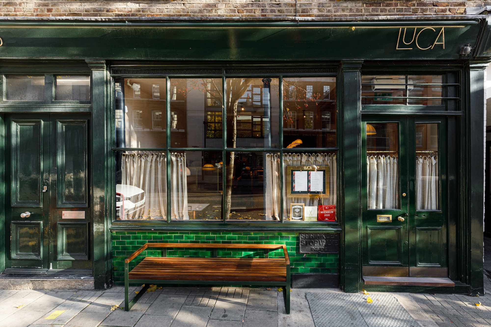
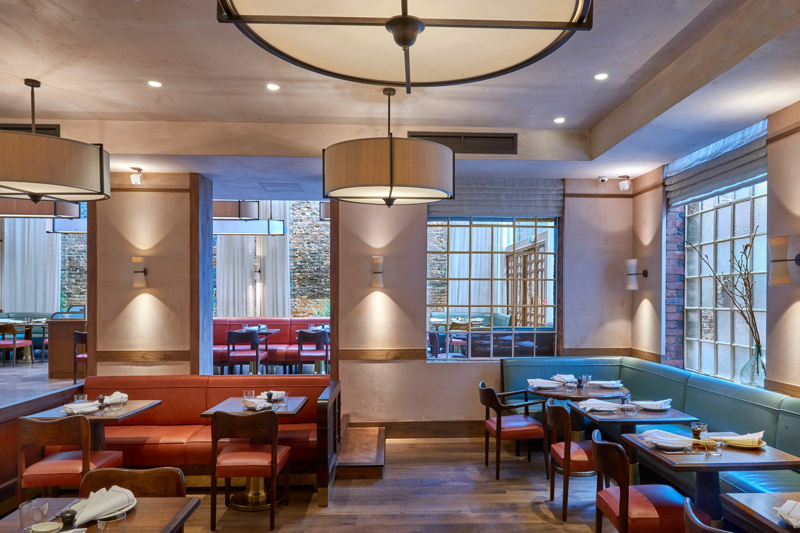
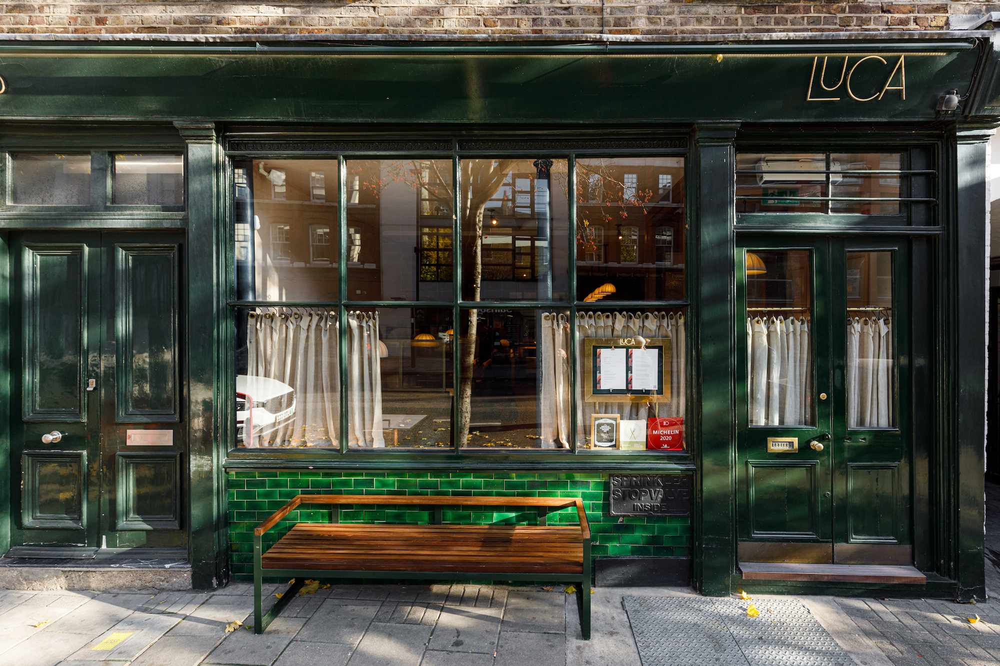
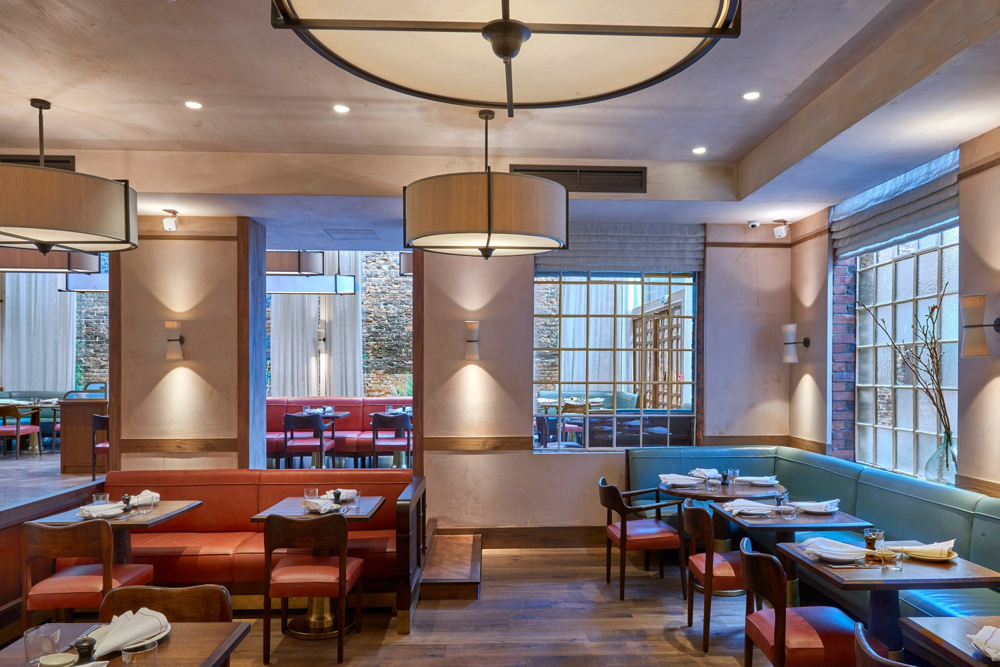
 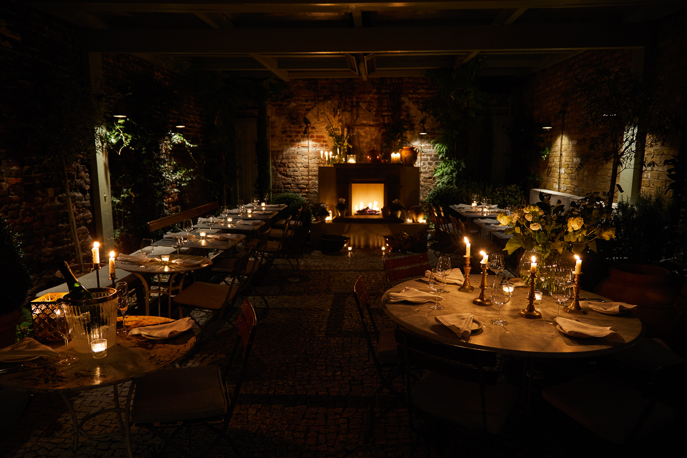
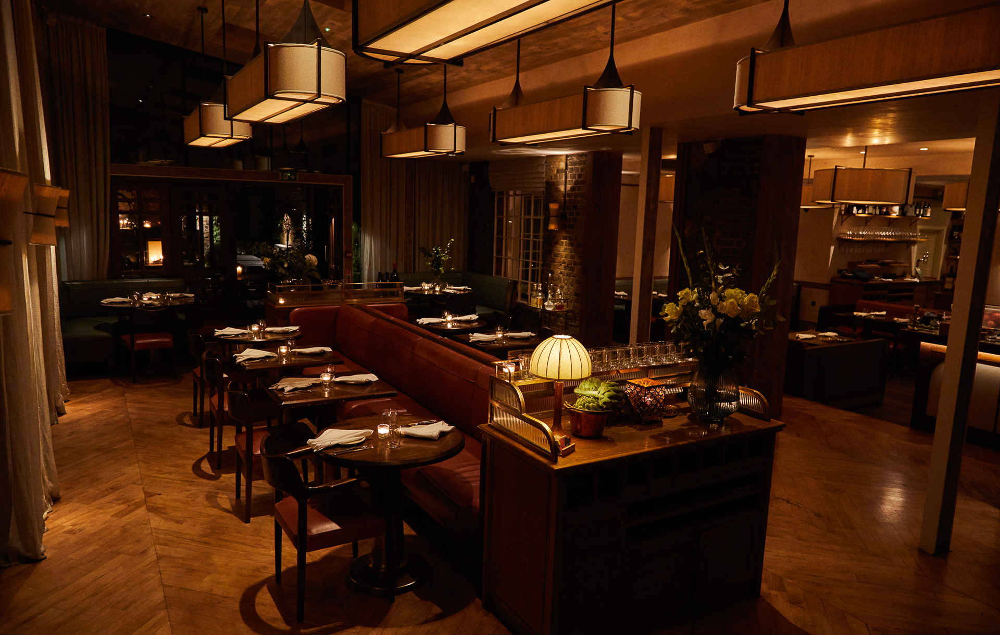
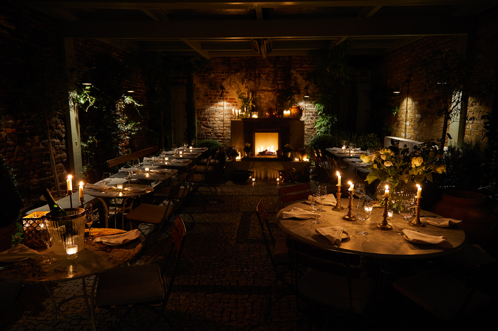
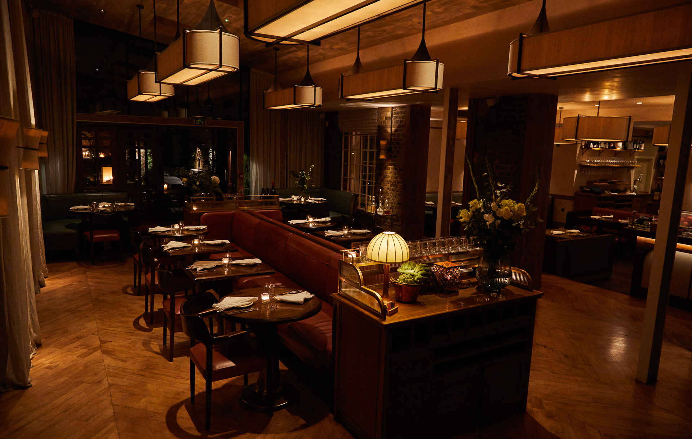

British seasonal ingredients through an Italian lens
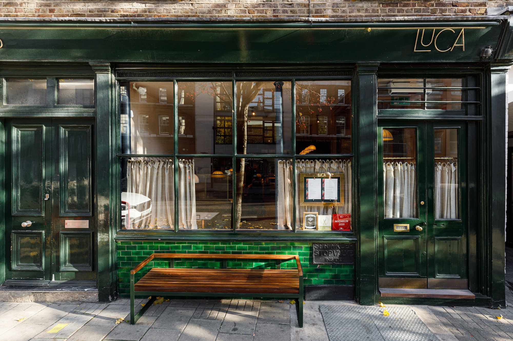
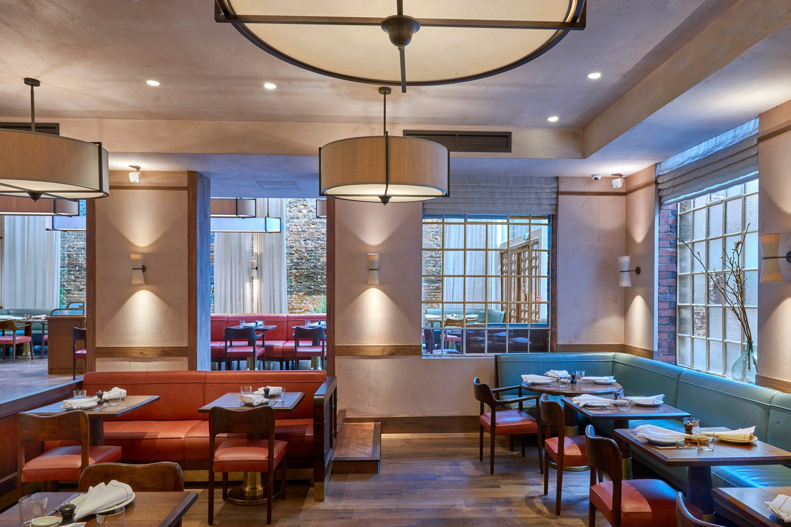
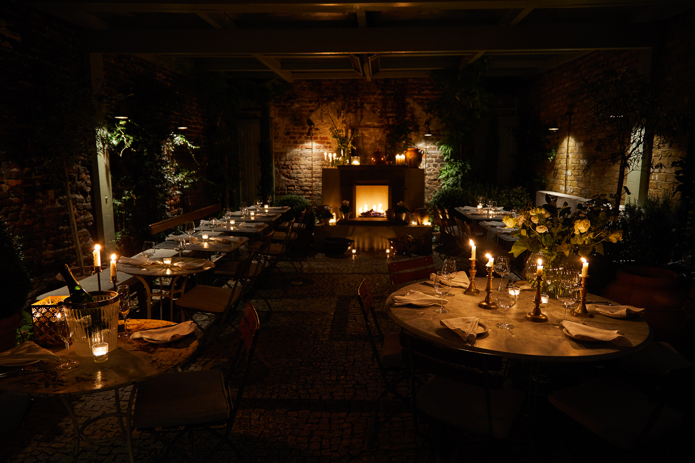
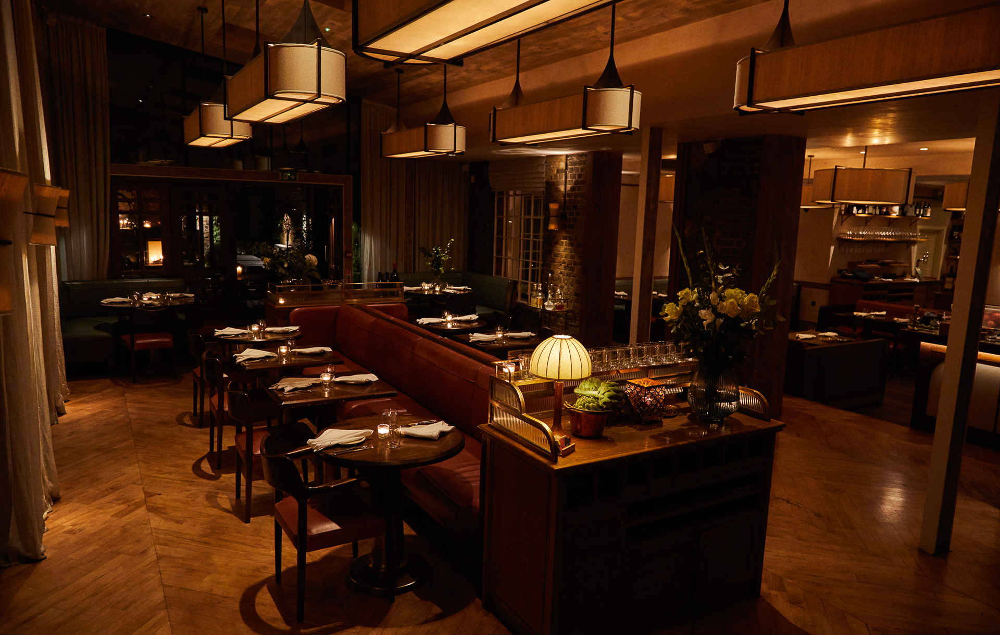
British seasonal ingredients through an Italian lens
The restaurant serves high-quality ingredients from around the British Isles and Italy. Seasonal produce such as scallops form Orkney, Hebridean lamb and turbot from Cornwall. It is food that observes the established traditions of Italian cooking, but breaks the rules a little.
BOOK A TABLE

Franciacorta, Negronis, Grappa & freshly shaken cocktails. Things to share – Parmesan fries, salumi, pasta. Take a seat in one of our iconic booths or at our marble bar for a drink, light bite or to settle in for the night.
ENQUIRE EVENTS BROCHURE
The restaurant serves high-quality ingredients from around the British Isles and Italy. Seasonal produce such as scallops form Orkney, Hebridean lamb and turbot from Cornwall. It is food that observes the established traditions of Italian cooking, but breaks the rules a little.
BOOK A TABLE

We have three private dining spaces; The Terrace for up to twenty guests, The Pasta Room for up to ten, and The Garden Room for up to eight guests. We can also accommodate parties for up to 14 guests on large tables in our main dining room or up to 100 guests for private hire.
ENQUIREWe are located at 88 St John St, Clerkenwell, London EC1M 4EH, as can be seen on the map to the left.
You can call us at 02038593000
Stay in touch and follow us on Instagram
We hope to see you soon!